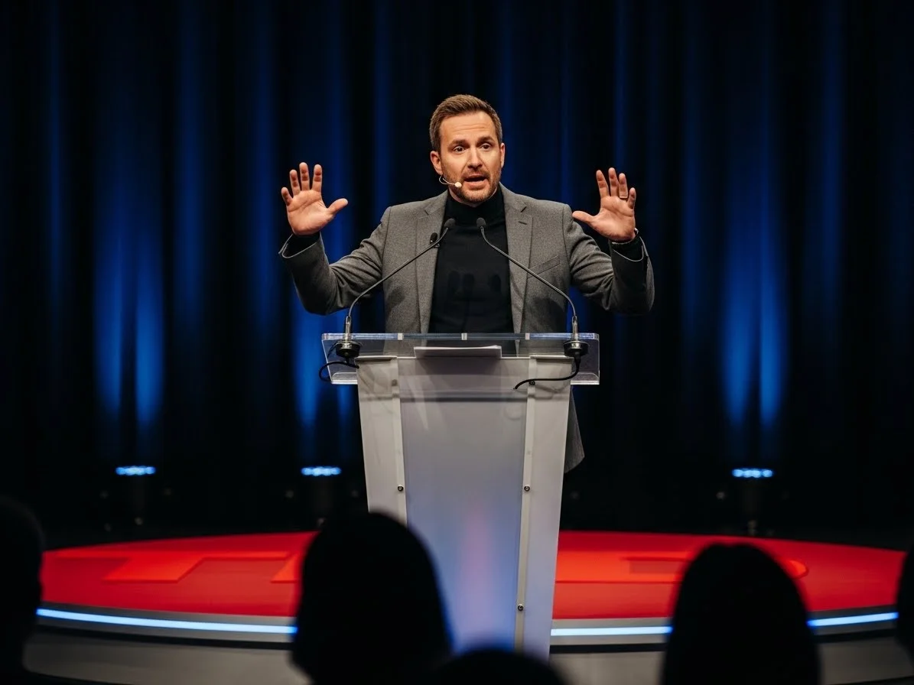
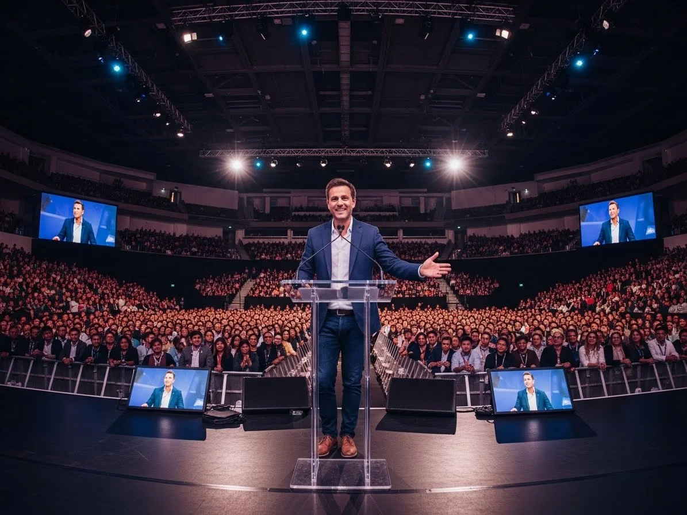
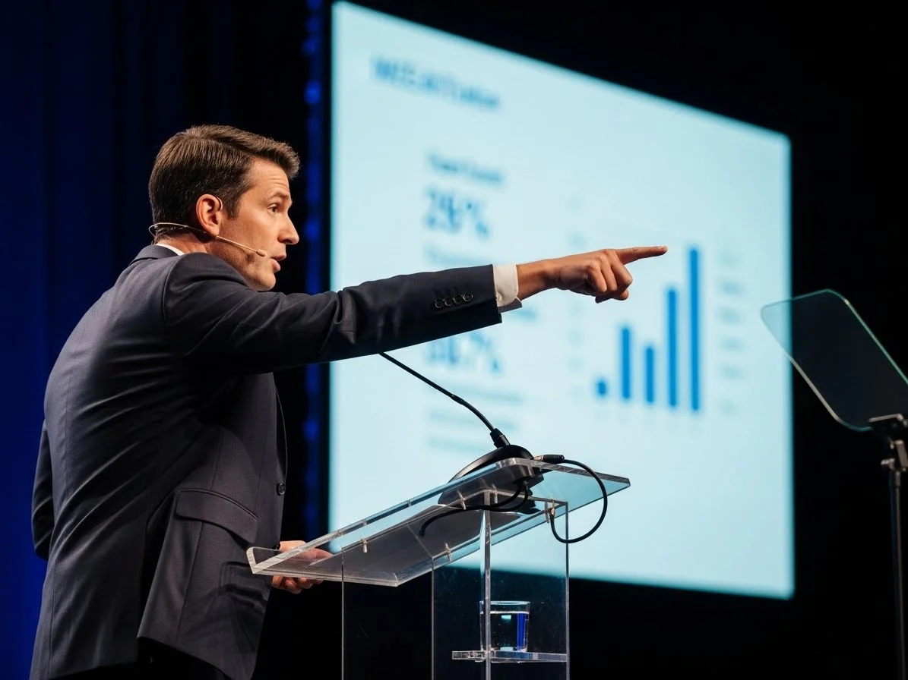
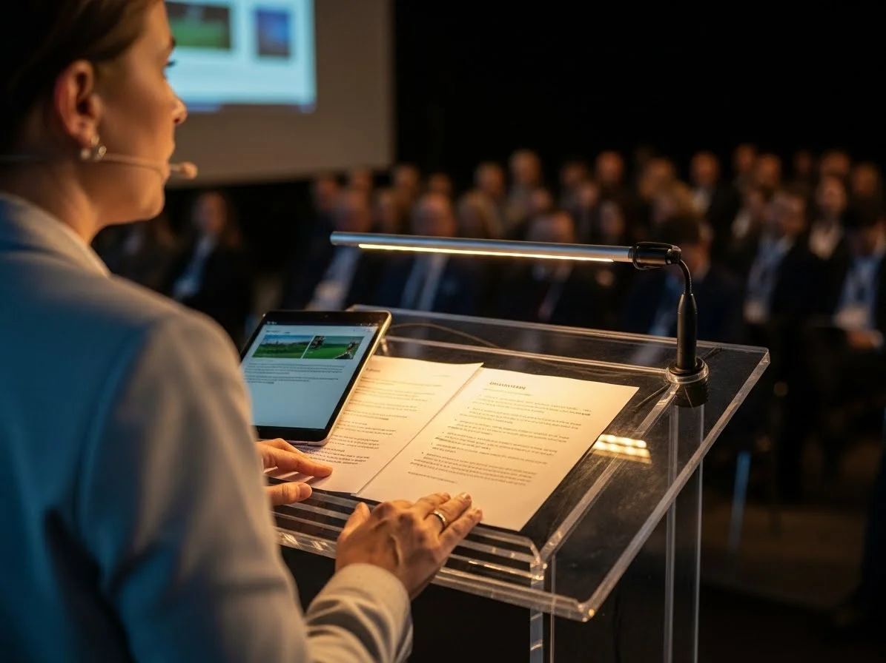
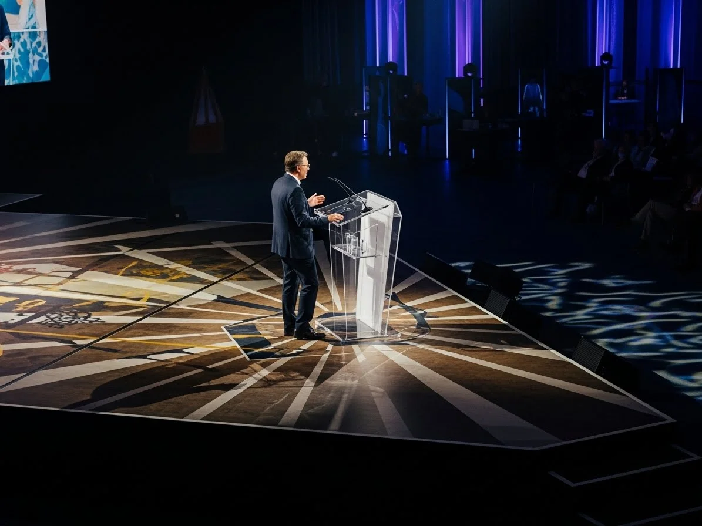
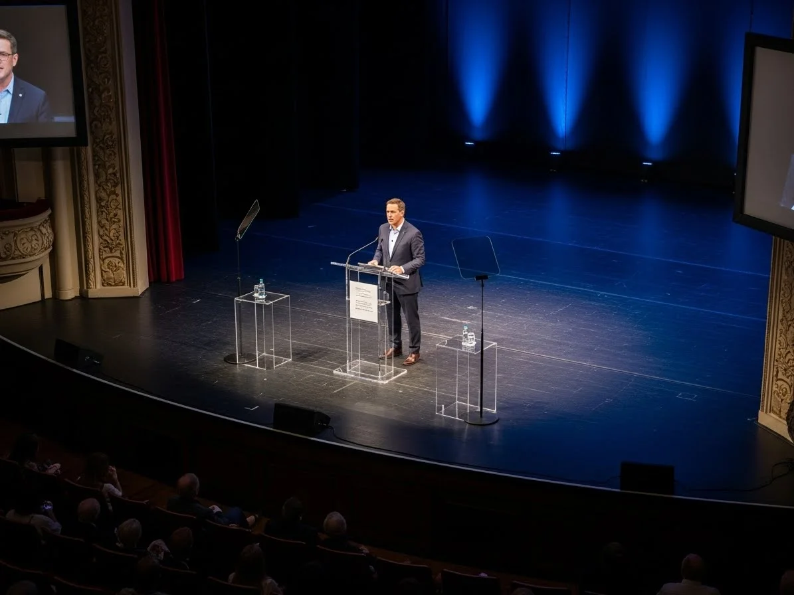

La diferencia entre un evento amateur y uno profesional muchas veces radica en un elemento que pasa desapercibido hasta que falta: el escenario. Un podium bien disenado o una tarima a la altura correcta transforma por completo la percepcion de tu DJ, banda, presentador o conferencista. No se trata solo de que lo vean mejor, sino de que proyecte autoridad, profesionalismo y presencia escenica.
En REDEIL llevamos mas de una decada montando escenarios para todo tipo de eventos en Ciudad de Mexico y Estado de Mexico. Desde cabinas compactas para DJs en bodas intimas hasta escenarios multinivel para bandas de 15 integrantes, hemos aprendido que cada evento tiene necesidades unicas. La altura del techo, la disposicion de las mesas, el tipo de audiencia y el estilo del evento determinan cual es la solucion correcta.
Nuestro catalogo incluye DJ booths con facades iluminadas, tarimas modulares desde 20 centimetros hasta 1.5 metros de altura, podiums de acrilico transparente para conferencias ejecutivas, y estructuras de truss capaces de soportar hasta 100 kilogramos de iluminacion profesional. Cada paquete incluye transporte, montaje profesional, nivelacion, faldones del color que elijas y desmontaje al finalizar tu evento.

Tipos de Podium para Conferencias
Los podiums para conferencias y presentaciones ejecutivas requieren un enfoque diferente al de los escenarios para entretenimiento. Aqui la prioridad es proyectar profesionalismo, facilitar la comunicacion y mantener la atencion del publico en el mensaje, no en la estructura.
Podium Acrilico Transparente
El podium de acrilico transparente es la opcion mas elegante y moderna para conferencias ejecutivas, congresos y eventos corporativos de alto nivel. Su diseno minimalista no compite visualmente con el presentador, permitiendo que toda la atencion se centre en el mensaje. La estructura de acrilico de alta resistencia soporta el peso de laptops, tablets y documentos sin problema. Incluye espacio integrado para organizador de cables, soporte para microfono y luz de lectura LED que no deslumbra al presentador. Disponible con base cuadrada elegante o columna central minimalista segun el estilo de tu evento.
Podium con Estructura Metalica
Para eventos que requieren mayor robustez o un look mas industrial, ofrecemos podiums con estructura metalica y panel frontal de acrilico. Esta combinacion ofrece estabilidad superior ideal para exteriores o venues con pisos irregulares. Las patas ajustables permiten nivelar perfectamente la superficie de trabajo. Es la opcion preferida para ferias, exposiciones y eventos donde el podium debe soportar uso intensivo durante varios dias.
Podium Personalizado con Branding
Para eventos corporativos donde la identidad de marca es prioritaria, ofrecemos podiums con personalizacion completa. Esto incluye placas de acrilico con logo grabado o impreso, paneles frontales en colores corporativos, y acabados especiales que reflejan la imagen de tu empresa. La personalizacion requiere coordinacion con al menos una semana de anticipacion para garantizar la calidad del resultado. Es la opcion ideal para lanzamientos de producto, conferencias de prensa y eventos anuales de empresa.
Podium Curvo LED
La opcion mas impactante para eventos de tecnologia, innovacion y presentaciones de producto. El podium curvo con paneles LED integrados crea un efecto visual moderno que complementa presentaciones multimedia. Los LEDs pueden mostrar colores solidos, patrones o incluso graficos sincronizados con la presentacion. Ideal para keynotes, lanzamientos de tecnologia y eventos donde la innovacion es parte del mensaje.
Eventos con Escenario
Bodas, conferencias, conciertos y eventos corporativos en CDMX y Estado de Mexico con nuestras tarimas y podiums.
Tarimas Modulares por Altura
La altura de la tarima es una decision critica que afecta directamente la visibilidad y la experiencia del publico. Una tarima demasiado baja hace invisible al artista; una demasiado alta puede resultar intimidante o incomoda. La eleccion correcta depende del tipo de audiencia, la disposicion del venue y el proposito del evento.
Tarima de 20-30cm: Eventos Intimos
La elevacion minima es ideal para eventos pequenos donde la audiencia esta sentada en sillas tipo auditorio o de pie muy cerca del escenario. Suficiente para distinguir visualmente al artista o presentador sin crear una barrera psicologica con el publico. Perfecta para lecturas de poesia, presentaciones de libros, sesiones acusticas intimas y ceremonias religiosas. Cada modulo mide 2x1 metros con estructura metalica y superficie de madera contrachapada que soporta hasta 500 kilogramos.
Tarima de 40cm: Salones con Mesas
La altura estandar para salones de eventos donde los invitados estan sentados en mesas redondas o rectangulares. A 40 centimetros, el artista o presentador es visible por encima de las cabezas de los invitados sentados, pero aun se mantiene accesible y cercano. Es la opcion mas solicitada para bodas, XV anos, graduaciones y cenas de gala. Incluye escalera de acceso y faldones del color que prefieras: negro, blanco, dorado o cualquier tono que combine con tu decoracion.
Tarima de 60cm: El Estandar Versatil
La altura intermedia que funciona tanto para eventos con mesas como para publico de pie. A 60 centimetros, el artista es claramente visible desde cualquier punto del salon sin importar si los invitados estan sentados o de pie. Es el estandar para conferencias, presentaciones corporativas, bandas en salones grandes y eventos mixtos. La estructura reforzada incluye tirantes de seguridad y superficie antiderrapante. Requiere escalera de 2-3 escalones para acceso comodo.
Tarima de 80cm-1m: Audiencias Grandes
Para eventos con mas de 200 personas, especialmente cuando hay publico de pie, la tarima de un metro garantiza visibilidad desde el fondo del venue. Es la altura profesional para conciertos, festivales, convenciones y eventos masivos en explanadas. La estructura reforzada con patas de acero y multiples tirantes de seguridad soporta equipos pesados de sonido e iluminacion ademas de los artistas. Requiere escalera de 4-5 escalones o rampa lateral para equipo.
Tarima de 1.2m-1.5m: Estadios y Explanadas
La maxima elevacion para eventos en espacios abiertos, estadios y explanadas donde la audiencia se extiende cientos de metros. A esta altura, el escenario es visible incluso para quienes estan muy lejos del frente. Requiere ingenieria estructural especifica para cada evento, incluyendo anclajes, contrapesos y barandales de seguridad. Incluye rampa de acceso para equipo pesado y multiples puntos de entrada para artistas.

DJ Booths Profesionales
El DJ booth no es solo una mesa para el equipo; es el centro visual de la fiesta. Una cabina bien disenada oculta cables y equipo tecnico, proyecta profesionalismo y puede convertirse en un elemento decorativo que complementa la estetica de tu evento.
DJ Booth Basico con Facade Scrim
La opcion mas economica para quienes buscan presencia profesional sin grandes inversiones. La estructura plegable tipo acordeon se monta en menos de 15 minutos. La facade de tela scrim (disponible en blanco o negro) oculta cables, equipo y las piernas del DJ, creando una imagen limpia y profesional. La mesa de trabajo incluye ventilacion para cables y superficie estable para controladores y laptops. Las patas ajustables permiten nivelar en pisos irregulares. Ideal para fiestas privadas, bodas pequenas y eventos con presupuesto limitado que no quieren sacrificar apariencia profesional.
DJ Booth LED RGB
La cabina mas popular para bodas modernas, XV anos y eventos donde el DJ es protagonista visual. Los paneles LED RGB integrados en los 4 lados frontales cambian de color segun el momento del evento: tonos calidos durante la cena, colores vibrantes durante el baile, el color de tu boda durante momentos especiales. El control puede ser manual con remoto incluido, o por DMX para sincronizacion profesional con la iluminacion del evento. La estructura de aluminio es ligera pero resistente, con facade iluminada que transforma cualquier rincon en una estacion de DJ profesional.
DJ Booth con Truss (Rockbooth)
El setup preferido por DJs profesionales y productoras de eventos que necesitan colgar iluminacion sobre la cabina. El sistema tipo Rockbooth incluye truss de aluminio de 2.4 metros de altura capaz de soportar hasta 100 kilogramos de luces: cabezas moviles, par LED, moving heads, laseres y mas. Incluye dos mesas con ventilacion para equipo dual, scrim blanco y negro intercambiable, y base con patas ajustables de alta resistencia. La instalacion requiere aproximadamente 45 minutos pero el resultado es un setup de nivel festival que impresiona a cualquier audiencia.
DJ Booth Elevado sobre Tarima
Para eventos grandes donde el DJ necesita ser visible desde todo el salon, combinamos la cabina profesional con una tarima de 40-60cm. Esta configuracion eleva al DJ por encima del nivel de las mesas, creando un punto focal que atrae las miradas y las fotos. El paquete incluye tarima con faldones, cabina LED o con truss segun prefieras, escalera de acceso y montaje coordinado. Es la opcion estandar para bodas de mas de 150 invitados y eventos corporativos de gala.
Consejo para Elegir Altura
Si tus invitados estaran sentados en mesas, 40cm es suficiente. Si habra gente de pie o el salon es grande, sube a 60cm. Para mas de 200 personas, considera 80cm o mas. Siempre podemos visitar tu venue para recomendarte la altura ideal.
Escenarios Especiales y Multinivel
Algunos eventos requieren configuraciones que van mas alla de una simple tarima rectangular. Bandas con multiples integrantes, espectaculos con coreografias, y producciones teatrales necesitan escenarios personalizados que se adapten a sus necesidades especificas.
Escenario Multinivel para Bandas
Las bandas y orquestas funcionan mejor cuando cada seccion tiene su espacio definido. Configuramos tarimas a diferentes alturas: bateria elevada 20cm adicionales en la parte trasera para visibilidad del baterista, teclados y bajista a nivel intermedio, vocalista principal al frente en el nivel mas bajo para conexion con el publico, guitarristas a los lados con ligera elevacion. Esta configuracion clasica optimiza la acustica al separar instrumentos y mejora dramaticamente las fotos y videos del grupo. Superficies desde 12m2 para trios hasta 40m2 para orquestas de 15 integrantes.
Escenario con Pasarela
Para desfiles de moda, presentaciones de quinceaneara con coreografia, y eventos donde el artista necesita acercarse al publico, extendemos la tarima principal con una pasarela. La pasarela puede ser recta hacia el centro del salon, en forma de T para maxima cobertura, o en L para adaptarse a la geometria del espacio. Todas las secciones se conectan de forma segura y se cubren con el mismo acabado para un look uniforme.
Escenario Circular o Semicircular
Para eventos teatrales, rituales ceremoniales, o presentaciones que requieren audiencia alrededor, construimos escenarios circulares o semicirculares usando modulos angulados especiales. Esta configuracion crea una conexion intima entre el presentador y el publico, ideal para ceremonias de matrimonio, rituales espirituales, presentaciones de danza contemporanea y teatro experimental.
Aplicaciones por Tipo de Evento
Cada tipo de evento tiene requerimientos especificos de escenario. Aqui detallamos las configuraciones mas solicitadas y las razones por las que funcionan.
Bodas y Recepciones
En bodas, el escenario cumple multiples funciones a lo largo de la noche. Durante la recepcion, el DJ o grupo versatil necesita ser visible pero no dominar el espacio. La configuracion tipica incluye tarima de 40-60cm con DJ booth LED en colores que combinen con la decoracion. Para bodas con banda, el escenario multinivel permite que cada musico sea visible. Muchas parejas tambien solicitan un podium pequeno para los brindis y discursos de padrinos.
XV Anos
La quinceaneara es la protagonista, pero el grupo o DJ mantiene la fiesta en movimiento. La configuracion popular incluye tarima de 60cm con DJ booth iluminado, dejando espacio al frente para el vals, el cambio de zapatilla y la coreografia con chambelanes. Para fiestas con grupo versatil, el escenario multinivel de 12-16m2 acomoda comodamente a 5-7 musicos.
Conferencias y Congresos
Los eventos corporativos requieren maxima profesionalidad visual. El podium de acrilico transparente o con branding corporativo es el centro del escenario. Para paneles con multiples ponentes, instalamos mesa presidencial elevada con sillas ejecutivas. La tarima de 40-60cm garantiza que todos los asistentes vean claramente a los presentadores. Para keynotes importantes, el escenario puede incluir pantallas LED laterales y teleprompter.
Conciertos y Festivales
Producciones de entretenimiento a gran escala requieren escenarios robustos capaces de soportar equipos pesados. Tarimas de 1 metro o mas con estructura reforzada, multiples puntos de anclaje para truss de iluminacion, y rampas de acceso para equipo. Nuestro equipo se coordina con ingenieros de sonido y lighting designers para garantizar que la estructura soporte todas las cargas requeridas.
Graduaciones y Ceremonias
Las ceremonias de graduacion necesitan flujo eficiente de estudiantes que suben a recibir su diploma. La configuracion tipica incluye tarima con escalera en un lado y rampa en el otro, permitiendo que los graduados suban por un lado y bajen por el otro sin congestion. El podium central para discursos complementa una mesa larga para autoridades educativas.
Galeria de Podiums y Tarimas en Eventos




Que Incluye el Servicio de Renta
Rentar podiums y tarimas con REDEIL significa cero preocupaciones tecnicas. Nos encargamos de cada detalle para que tu solo te enfoques en tu evento.
Asesoria y Visita Tecnica
Antes de tu evento, podemos visitar tu venue para medir el espacio y evaluar las condiciones del piso. Recomendamos la altura, tamano y configuracion ideal de tarima segun el tipo de evento, numero de invitados y caracteristicas del salon. Esta asesoria no tiene costo adicional y garantiza que el escenario sea perfecto para tus necesidades.
Transporte e Instalacion
Llevamos todos los modulos, estructuras y accesorios a tu venue en toda la CDMX y Estado de Mexico. Nuestro equipo de instalacion arma, nivela y asegura la estructura completa. Verificamos estabilidad y seguridad antes de entregar el escenario listo para usar. El tiempo de instalacion varia segun la complejidad: desde 30 minutos para un DJ booth basico hasta 3-4 horas para escenarios multinivel grandes.
Acabados y Faldones
Las tarimas incluyen faldones del color que elijas: negro clasico, blanco elegante, dorado festivo, o cualquier color especifico que combine con tu decoracion. La superficie de la tarima esta disponible en tres acabados: gris industrial (el mas economico), alfombra (ideal para ceremonias y conferencias), o charol negro (el look mas premium). El acabado se selecciona al momento de la cotizacion.
Escaleras y Accesos
Tarimas de 40cm o mas incluyen escalera de acceso segura con barandal cuando es necesario. Para escenarios grandes o multinivel, instalamos multiples puntos de acceso. Si tu evento incluye equipo pesado (amplificadores, bateria, teclados), agregamos rampa lateral para carga sin costo adicional.
Desmontaje Completo
Al terminar tu evento, nuestro equipo regresa a desmontar y retirar absolutamente todo. Tu venue queda libre sin que tengas que preocuparte por la logistica de devolucion. El horario de desmontaje se coordina previamente para no interferir con otros proveedores.
Por Que Elegir REDEIL para tu Escenario
- Montaje Profesional: Equipo especializado que arma, nivela y asegura cada estructura.
- Variedad de Opciones: Desde DJ booths compactos hasta escenarios multinivel de 40m2.
- Acabados Premium: Faldones en cualquier color, superficies alfombradas o de charol.
- Experiencia Comprobada: Mas de 30 anos montando escenarios en la zona metropolitana.
Cotiza tu Podium o Tarima
Eleva la presencia de tu DJ, banda o presentador con escenarios profesionales. Respondemos en menos de 2 horas.
Cotizar por WhatsAppPreguntas Frecuentes
Contamos con DJ Booth basico con facade de tela scrim, DJ Booth LED RGB con paneles iluminados controlables por DMX, DJ Booth con Truss tipo Rockbooth para colgar hasta 100kg de iluminacion, podiums de acrilico transparente para conferencias ejecutivas, y podiums personalizables con branding corporativo. Cada opcion esta disenada para diferentes tipos de eventos y presupuestos.
Manejamos tarimas modulares desde 20cm hasta 1.5 metros de altura. Las alturas mas populares son 40cm para salones con mesas, 60cm como estandar para eventos mixtos, y 1 metro para audiencias grandes de pie. Para bandas y orquestas ofrecemos configuraciones multinivel personalizadas. Cada modulo mide 2x1 metros y soporta hasta 500kg.
Depende del modelo. El DJ Booth basico incluye solo la estructura con facade de tela scrim. El DJ Booth LED RGB incluye paneles iluminados en los 4 lados frontales con control DMX o remoto. El DJ Booth con Truss no incluye luces pero permite colgar hasta 100kg de iluminacion profesional. Los podiums de conferencias incluyen luz de lectura LED integrada.
El espacio depende del tipo de estructura. Un DJ Booth basico requiere aproximadamente 2x1 metros. Las tarimas modulares se arman en multiplos de 2x1 metros, siendo 4m2 el minimo recomendado para un DJ y 12-40m2 para bandas completas. Ademas, considera espacio para escaleras de acceso y un perimetro de seguridad de al menos 50cm alrededor de la estructura.
Si, ofrecemos personalizacion completa para eventos corporativos. Los podiums de acrilico pueden incluir placas con logo grabado o impreso. Las facades de DJ booth aceptan impresion de logos y graficos. Los faldones de tarimas estan disponibles en colores especificos segun tu marca. La personalizacion requiere coordinacion con al menos una semana de anticipacion para garantizar calidad.
Complementa tu Escenario con Iluminacion Profesional
Un escenario impacta mas cuando esta bien iluminado. Las cabezas moviles crean dinamismo visual sobre el DJ o banda. Los city colors banan de color la fachada del escenario. Para conferencias, un seguidor mantiene al presentador perfectamente iluminado. Pregunta por paquetes combinados de escenario mas iluminacion.
Mas de Una Decada de Experiencia
Desde 2010, REDEIL ha montado escenarios para miles de eventos en la zona metropolitana del Valle de Mexico. Hemos trabajado con productoras de eventos, hoteles de cinco estrellas, empresas Fortune 500 y familias celebrando sus momentos mas importantes. Esta experiencia nos permite anticipar problemas, optimizar montajes y garantizar que cada escenario cumpla su funcion perfectamente.
Cobertura en CDMX y Estado de Mexico
Nuestro servicio de renta de podiums y tarimas llega a toda la zona metropolitana. En CDMX cubrimos Polanco, Santa Fe, Coyoacan, Condesa, Roma, Pedregal, Del Valle y todas las alcaldias. En Estado de Mexico atendemos Naucalpan, Huixquilucan, Interlomas, Tlalnepantla, Atizapan, Metepec, Toluca y mas. Para eventos fuera de la zona metropolitana, contactanos para evaluar disponibilidad.